X4 Club Madrid
Project Context
I was hired as art director for a planned club in Madrid called X4 (Equiscuatro). The project involved developing a complete brand identity, spatial concept, and cultural positioning for a new electronic music venue.
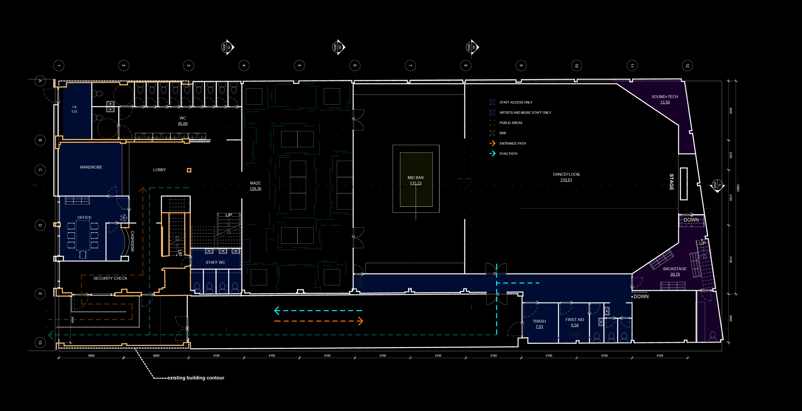
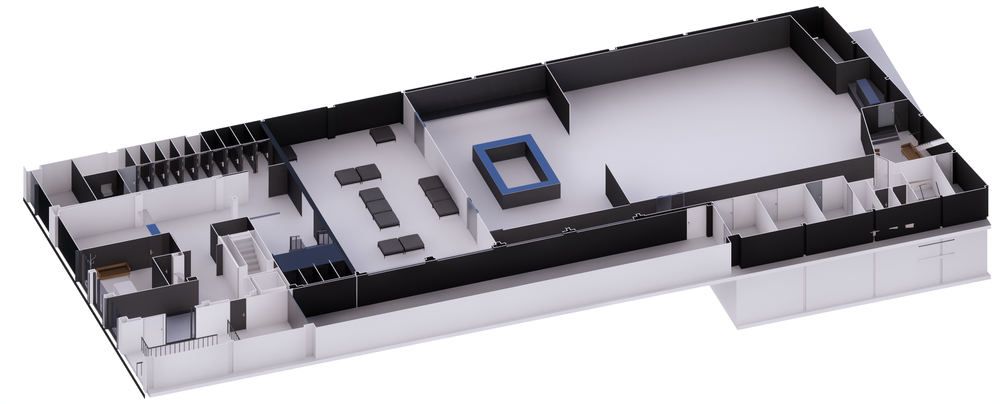
logo polishing
The quaternity principle manifests throughout the club experience:
- Lighting colors shift depending on one of the four seasons
- Operating hours: 4 PM to 4 AM
- Bar prices may feature the number 4 or be multiples of 4
- Group discounts or bonuses for 4 people
- Thematic seasonal art exhibitions based on four topics: Earth, Water, Air, Fire (or Nature, Technology, Society, Self)
- Thursday (the 4th day of the week) as a special event day
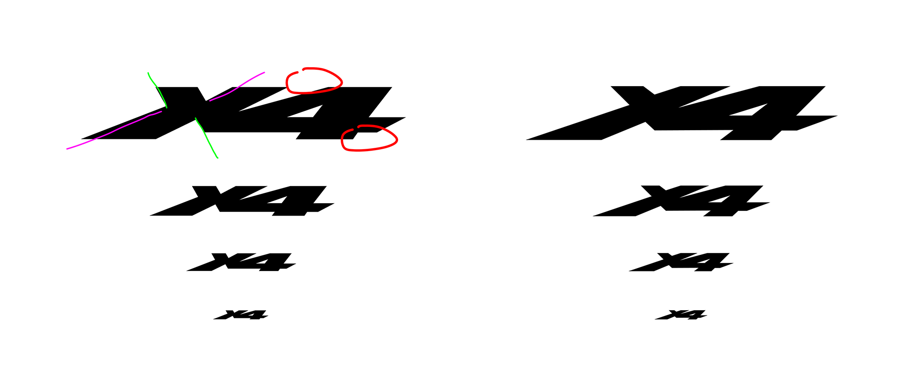
Research & Analysis
Industry Analysis Framework
To systematically understand the nightlife ecosystem, I developed this framework mapping relationships between cultural phenomena, communities, emotional needs, and spatial concepts:
| cultural phenomenon | community (customer segments) |
emotional need | events | vibe | space concept |
|---|---|---|---|---|---|
| traditional-society pressure | minorities | freedom | conceptual parties | safe underground | conceptual club |
| modern art | art lovers, creative people | impressions | exhibitions | provided by art author | art gallery |
| capitalism | workers | take a rest | any party | fun and chill | dance club |
| electronic music | artist/direction fans | hangout | particular parties | provided by artist | electronic music club |
| tourism | tourists | exploration | any | try to find unique local vibe | any |
Research Scope & Methodology
To ensure X4's concept was grounded in contemporary practice, I conducted extensive audit of over 50 clubs, venues, and cultural spaces worldwide, analyzing their:
- Visual identity systems
- Social media presence and community engagement
- Spatial design and programming
- Cultural positioning and values communication
Conceptual Clubs & References
Projection Mapping & Immersive Tech
Madrid Cultural Context
The starting point was existing positioning: "ART GALLERY & CONCERT VENUE WITH GROUNDBREAKING PROJECTION MAPPING". I conducted deep analysis of successful conceptual clubs worldwide to understand their cultural role beyond entertainment.
Client Referenced Clubs
K41, Kyiv
Logo: ∄ — mathematical symbol meaning "there does not exist."
Addresses post-Soviet societal pressure on individual identity. The club becomes a "hidden cave" where patrons escape societal surveillance. As the founder stated: "We decided not to have social media accounts and to mainly communicate via Telegram, our website and zine, which changes every season when we have a new theme."
Berghain, Berlin
Name: Portmanteau of Kreuzberg and Friedrichshain (former West and East Berlin).
Values: "base concealment, queerness and excess — boundless freedom." The location itself symbolizes unification of divided histories, creating space for radical self-expression.
Bassiani, Tbilisi
Position: "Guardian for freedom, equality, diversity."
Active political stance with published manifestos addressing inequality in Georgia. The club serves as both sanctuary and political statement.
Common Principles
- No photography policies (camera stickers on phones)
- Dress codes that reinforce community values
- Safe space protocols protecting marginalized groups
- Minimalist visual identities that spotlight artists, not the brand
- Own music labels defining artistic direction
The visual style of these clubs is intentionally simple and minimalistic—their identities shift accent to artist posters, covers, and art. This differs fundamentally from popular dance clubs where branding dominates. Their identities serve to unfold artists' uniqueness rather than overshadow it.

Core Insight
Successful conceptual clubs such as Berghain, K41 and Bassiani operate not as entertainment venues, but as cultural infrastructure. They respond to local societal pressure by creating protected environments where people—especially minorities—can experience freedom, anonymity and authentic self-expression.
Their impact is driven by symbolic clarity and community logic, not by scale, branding or technology. The underground character of these spaces emerges naturally from clearly defined values, behavioral rules and a strong sense of purpose.
Research shows that conceptual clubs occupy a distinct intersection between culture and nightlife: they address traditional-society pressure through conceptual parties that create a safe underground atmosphere. This positioning fundamentally differentiates them from art galleries, conventional music venues and commercial dance clubs.
Within this framework, X4’s strongest potential lies within the conceptual club segment—serving deeper emotional and social needs rather than focusing on entertainment or spectacle. Technology, including projection mapping, is effective only when it supports narrative, emotion and community building.
- Minimalist digital presence focused on events
- Immersive technology succeeds when embedded in narrative
- Madrid balances institutional and independent culture
- Instagram remains the primary communication channel despite no-phone policies
Quaternity Concept
X4 (Equiscuatro) is a portal to a fourth dimension where humans experience wholeness with the world. Equiscuatro embodies the spirit of immersion in integrity, drawing from the symbolism of quaternity.
The idea of quaternity originates from Carl Jung and symbolizes the integrity of personality. It often manifests in symbols featuring four parts, such as the four elements (earth, water, air, fire), the four cardinal points (north, south, east, west), or the four seasons (spring, summer, autumn, winter). Many archetypal symbols and figures in myths, dreams, and religious imagery are structured around the number 4.
The letter "X" represents the unknown, while the number 4 symbolizes the fourth dimension of integrity, illuminated by advanced projection mapping technology.
Just as the Buddhist mandala represents the harmony of the self and the universe, quaternity signifies completeness. Our venue integrates four distinct yet interconnected dimensions:
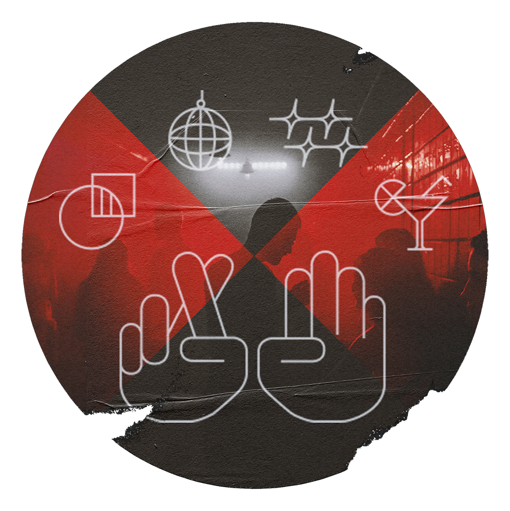
- Art Gallery
Sight (visual expression) - Concert Venue
Sound (musical immersion) - Food Court
Taste (culinary experience) - Safe Space
Freedom (inclusive community)
Since the artists and exhibitions vary in visual style, they are united within one platform through symbolic and ideological design rather than stylistic uniformity. Quaternity serves as a broad field for ideas and creative exploration.
Concept Applications
The quaternity principle manifests throughout the club experience:
- Lighting colors shift depending on one of the four seasons
- Operating hours: 4 PM to 4 AM
- Bar prices may feature the number 4 or be multiples of 4
- Group discounts or bonuses for 4 people
- Thematic seasonal art exhibitions based on four topics: Earth, Water, Air, Fire (or Nature, Technology, Society, Self)
- Thursday (the 4th day of the week) as a special event day
Visual Identity
Sign: The artists and exhibitions all differ in visual style, and they need to be united within one platform. X4 is a universal space, so the identity should be universal as well. The proposal is to use the Unicode character ⦻ (U+29BB) as the primary brand symbol.
The sign clearly reads as both X and 4 (parts of a circle). Despite its simplicity, it is unique—there is nothing like it in Madrid's club market—and it is easy to remember and draw by hand. Visually, it resembles a portal, synchronizing with the concept of the fourth dimension and projection mapping.
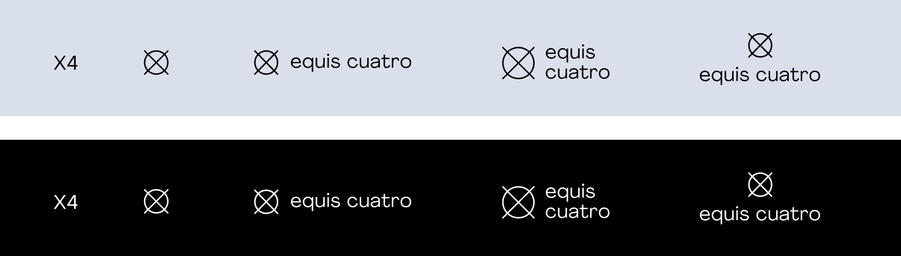
A simple sign can be easily integrated into artworks of any style without clashing, while remaining distinctive. This provides ample creative freedom for advertising, promotional materials, and event campaigns. Subjectively, the symbol has a sharp, rebellious character, breaking the circle’s boundaries, which resonates with the underground nightlife audience.
Assets & Visual Principles
Quaternity principle: All design materials should, where possible, reflect the principle of fourfold structure. Examples include:
- Groups of 4 humans, stars, fingers, or dots in a palette
- Icons and graphical elements arranged in sets of 4
- Pixelated icons — pixels naturally have 4 sides!
This is not a strict rule, but a guiding recommendation to create a subtle yet consistent link to the quaternity concept throughout the visual system.
The principle allows flexibility and creativity while reinforcing the core brand ideology: unity through fourfold structures in all materials, from UI elements to print and digital assets.
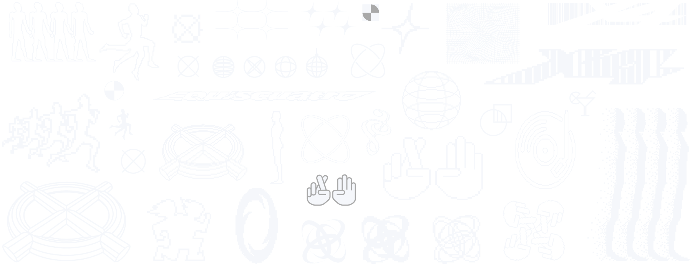
Materials
The visual identity of X4 was deliberately designed as a universal, adaptive system, capable of functioning across a wide range of media, scales, and contexts without becoming visually dominant.
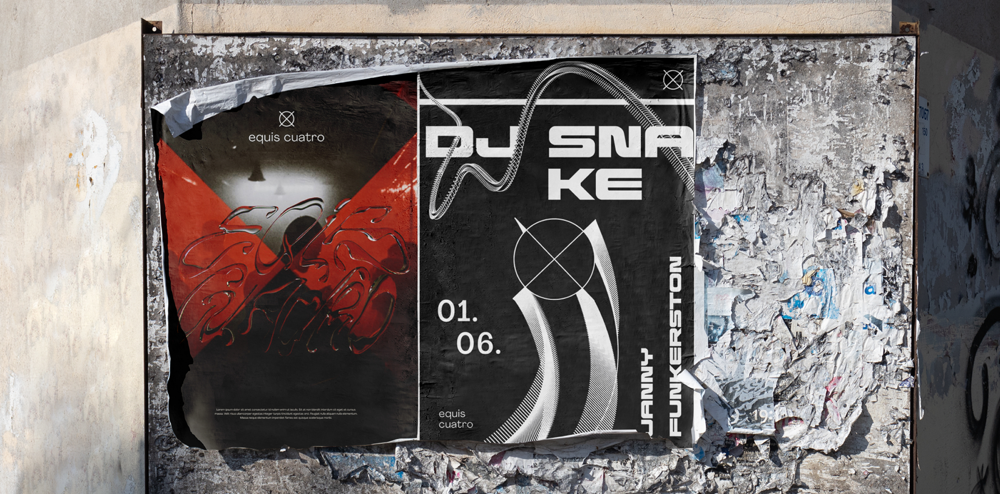
As X4 operates simultaneously as a club, gallery, and cultural platform, the identity avoids rigid stylistic constraints. Instead of imposing a fixed visual language, it acts as an infrastructural layer — a framework that supports content rather than competing with it. This approach allows the focus to remain on the exhibited art, invited artists, and situational atmospheres, rather than on the branding of the space itself.
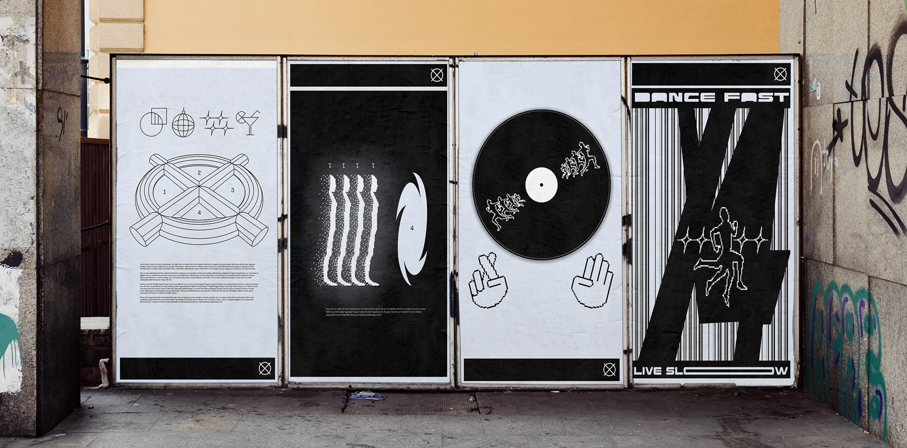
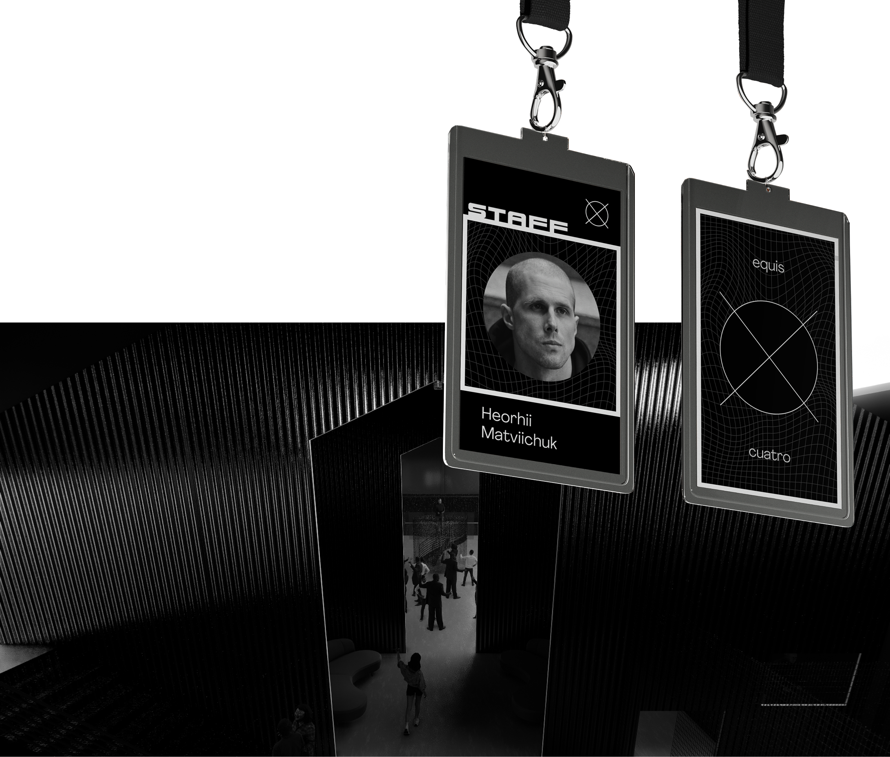
The system is intentionally flexible in terms of color usage and tonal variation. Accent colors are not fixed and can shift depending on season, exhibition theme, artist, or lighting scenario. This is especially important in a gallery context, where visual neutrality is required to prevent interference with artworks. Identity recognition is achieved through structure, rhythm, symbolism, and repetition — not through color dominance.

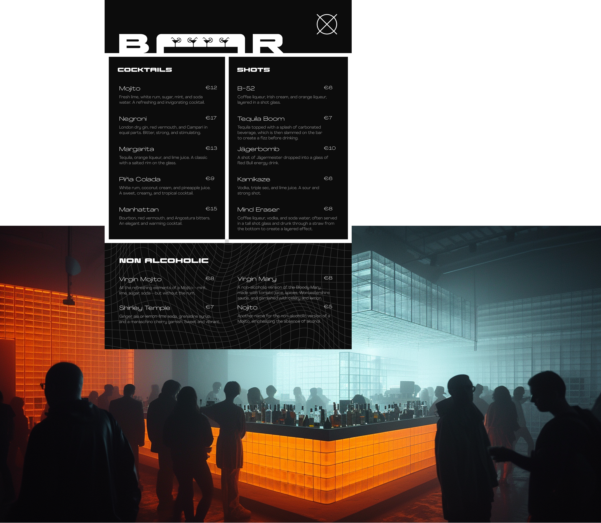
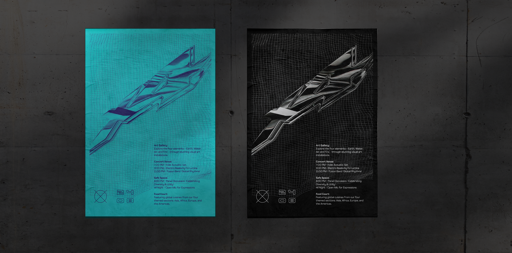
Across all materials — posters, motion graphics, spatial applications, interior elements, bar assets, merchandise, and wayfinding — the identity remains cohesive through:
Rather than enforcing consistency through decoration, coherence emerges through logic and ideology.
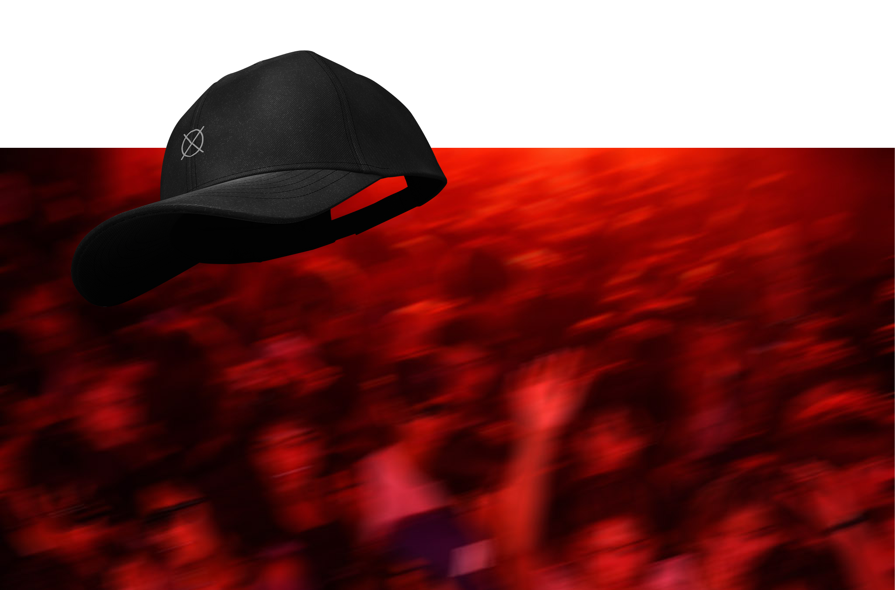

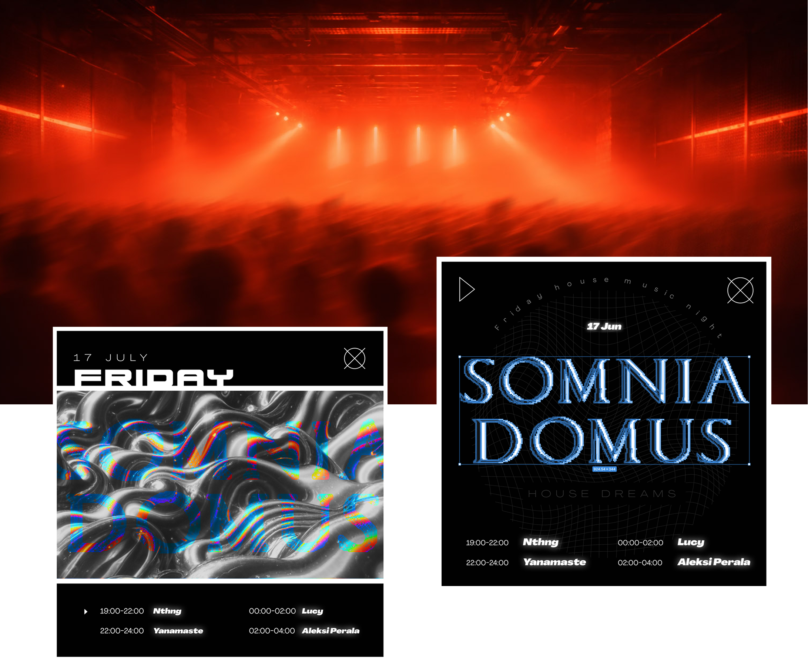
Motion plays a key role in extending the identity beyond static media. Video and projection mapping are treated as living materials that react to space, light, and audience movement. The brand exists not only on surfaces but also in time — reinforcing the idea of X4 as a portal rather than a static place.
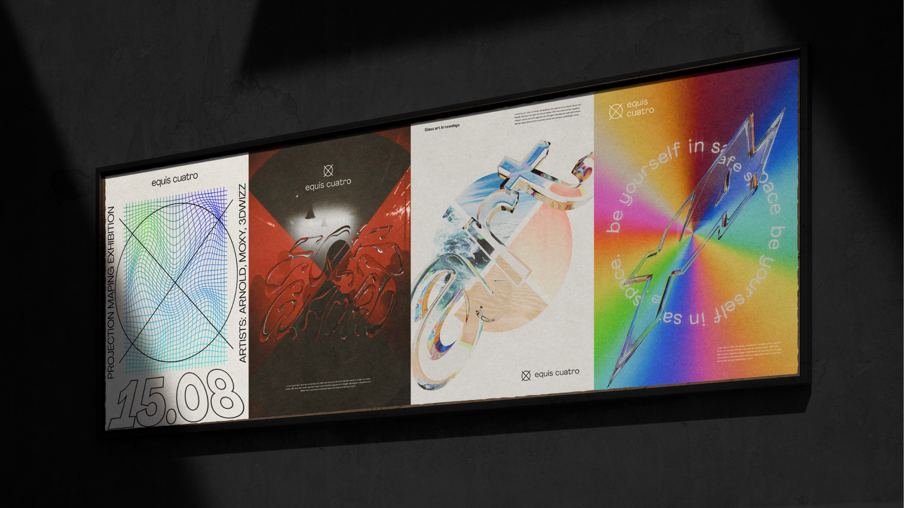
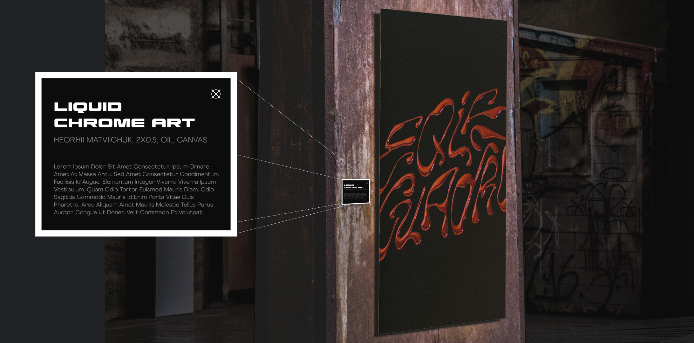

Merchandise and physical objects (clothing, accessories, tape, keys, bags) are designed as extensions of the environment, not souvenirs. Their graphics remain minimal, adaptable, and context-aware, allowing them to exist both inside and outside the club without losing relevance.

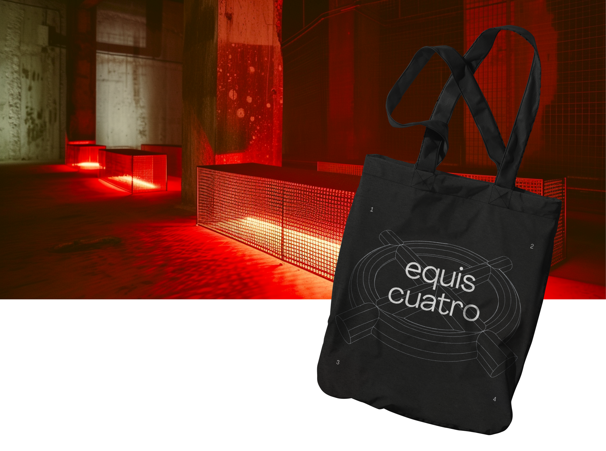
This material strategy ensures that the identity:
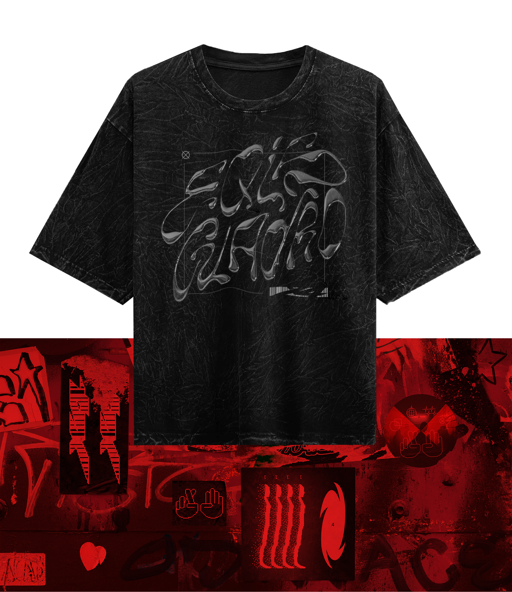
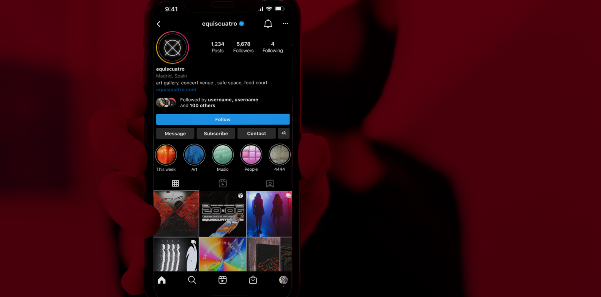
Ultimately, the materials reflect the core philosophy of X4: unity through multiplicity. A system that does not dictate form, but provides structure — allowing diverse expressions to coexist within a single, coherent dimension.